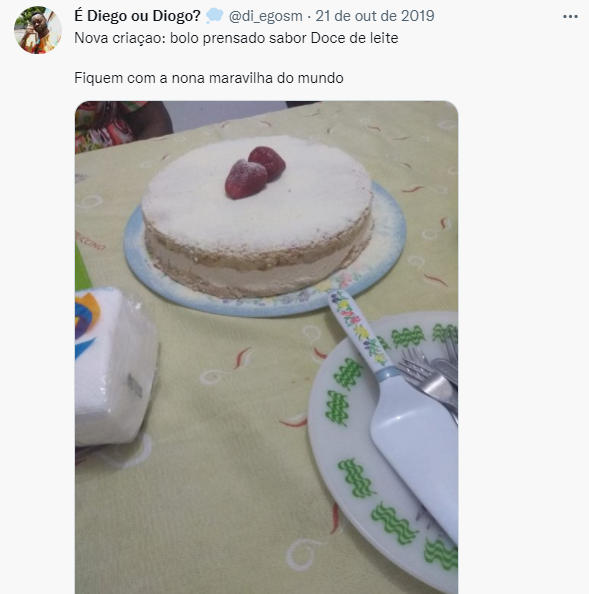
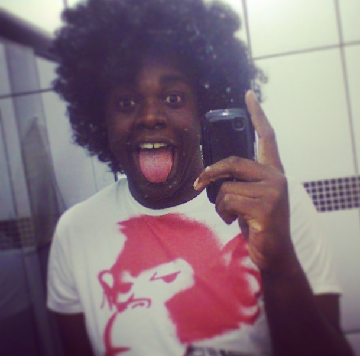

Quem é Diego?
É ninguém mais, ninguém menos que Diego Simões.
É esperado que qualquer ser humano minimamente descente já tenha no minimo ouvido falar de Diego, aqui daremos algumas informações a mais sobre Ele para fins de exaltação.
Diego possui 28 anos, faz aniversário entre 21 de janeiro e 18 de fevereiro e atualmente, vive em Belo Horizonte, na região do barreiro.
Estudante, professor, coach, degustador de cervejas, cozinheiro, digital influencer e garoto de programa programador.
Instagram: @di_egosm
Twitter: @di_egosm
O que faz de Diego um ser superior?
- Deu um curso para dois bandos de adolescentes
Aparentementecozinha bem- Assistiu Dark
- Zoa kpoper publicamente
- Da conselhos amorosos
- Demora pra mudar as fotos de perfil
- Tem apelidos legais, como "Péricles" e "Dingegro"
- É coach no Instagram
- Aguenta uma família que fala gritando
- É tio
Curiosidades sobre a obra
Quando tweeta, provavelmente está bêbado •
Gosta de cerveja •
Sofre por amor •
Não gosta de fanta zero •
Tem trauma da Galinha Pintadinha •
É cruzeirense •
Já bebeu cerveja em um copo da Peppa Pig •
Galeria
 